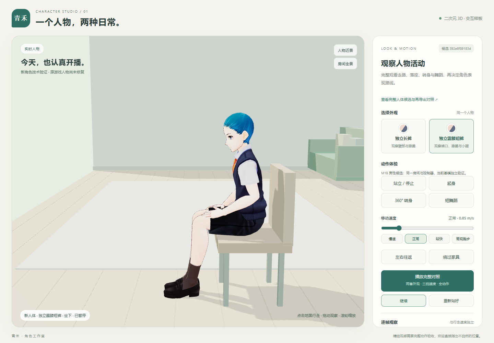
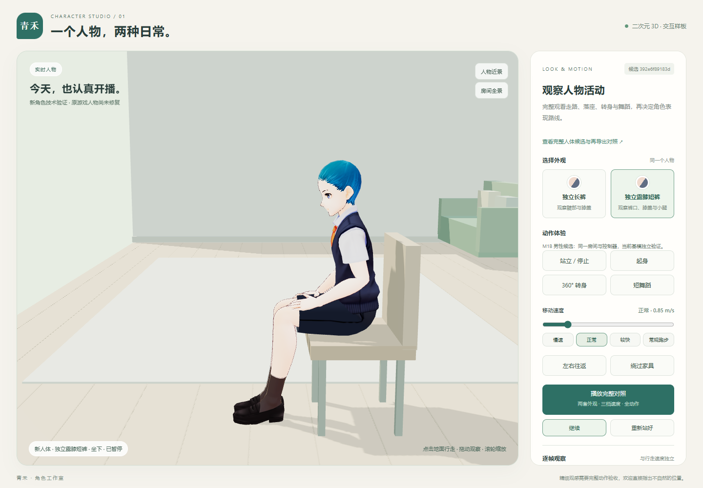

女性当前入口 · 男性当前入口 · 持麦修复正常1倍速对照
用户已接受上述新版持麦表现。源码16bada2，新检出63文件相同。包含直接跑意图修复，移动掉头进一步改进仍是隔离实验；裙装与普通电脑性能仍未通过。
真人视频→关键点→男女角色回读：下蹲短片，实际链路已跑通，但腕掌、遮挡与目标接触仍有缺陷，不是合格舞蹈。
本页用于比较已有固定证据，不是M1通过声明。以下各片标明自己的构建，不能互相继承验收。建议先看正常房间距离的连续动作，再看近景；近景用于技术审查，不代表正式直播特写已确定。男女仍是技术候选，画风待确认，普通电脑未实测。
13f男性短裤正常1倍速录像约3–6秒换向走停、19–25秒起身后转向行走，用户反馈“这两段动作可以接受”。仅限这两段，不代表材质、整片或M1通过。此前341约12–15秒加速停止的接受范围也保持独立。
打开女性候选 · 打开男性候选并选择独立露膝短裤 · 本版正常1倍速坐讲、起身短片
源码0ae64b8已备份，新检出63产物逐字节一致。新增精确男女镜腿适配、附件失败可读提示与调试按钮换行。裙形、完整自然度、普通电脑仍未通过。旧269对照与原影片/固定目录保留。
269手接触专项历史影片 · 13f男女完整操作链（不改标为本版完整验收）
男女各25项状态检查通过，新检出63产物一致。固定房间镜头，完整走跑、坐讲、卸麦招手、两段技术舞及中断。裙形与连续自然度仍待验。之后902只修附件按钮失败提示；此处影片保持13f原身份，此历史条目对应入口为1a；本段原片仍为13f。
efdf → 34148e260e6d，同房间/镜头/速度/路径，先完整五步态周期再实际相位触发加速、同距离停止。旧片约13.18秒出现支撑偏差峰90.49mm，新片对应加速峰2.01mm。数值及全时间抽帧已审。用户已接受新版约12–15秒加速与停止片段；仅限该片段，其余动作、衣物与当前集成版仍需各自验收。
实际装备接口加载，同房间1×长短切换、坐起及完整技术舞；alpha与几何保持，原材料可恢复。布面硬褶明暗减弱，几何问题不据此通过。
打开原材质／布色候选对照换装、走跑重选、入座讲话、卸麦招手、起身、舞蹈和中断；不重置角色。裙手交叉仍有问题，相机后段变化已单独记录。
查看两条完整连续影片efdf558930a4。完整片约49秒；已接入共用控制器，短裤硬褶与转向自然度未通过。技术舞不等于正式舞蹈品质。
新的同镜头1×对照已保存，仍有裙硬折及起身掌指穿插，未通过完整服装验收。
ad0e99f456ee，独立试验未合主。保留源动作手腕，缓存优化前后270姿势接触数值相同；开发机房间坐稳平均仍20.31ms/P95 30ms，有长帧，裙硬折仍在。工程审查目前是全时间范围抽帧，不能替代连续自然度确认。
392e6f89183d运行时，右侧叠加独立material-trial-v4诊断材质。几何、权重、透明覆盖未改变；只替换布片中的固定褶皱颜色，保留源接缝。此图不证明裤口/裤裆或连续动作通过，尚未加入产品装备。


当前4191为1a待验候选，4192为269对照，4174为证据；历史固定目录与影片保留。启动与回滚见docs/CURRENT-DEMO.md。M1尚未全部通过。